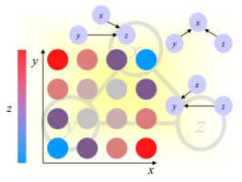

JMLR Workshop and Conference Proceedings
|
 |
The Website of the Active Learning Challenge is still available for post-challenge submissions. |
Appendix I: Result Tables and Challenge Fact Sheets |
Appendix II: Technical Report Describing the Datasets of the Challenge |
Appendix III: Technical Report describing the Challenge Implementation |